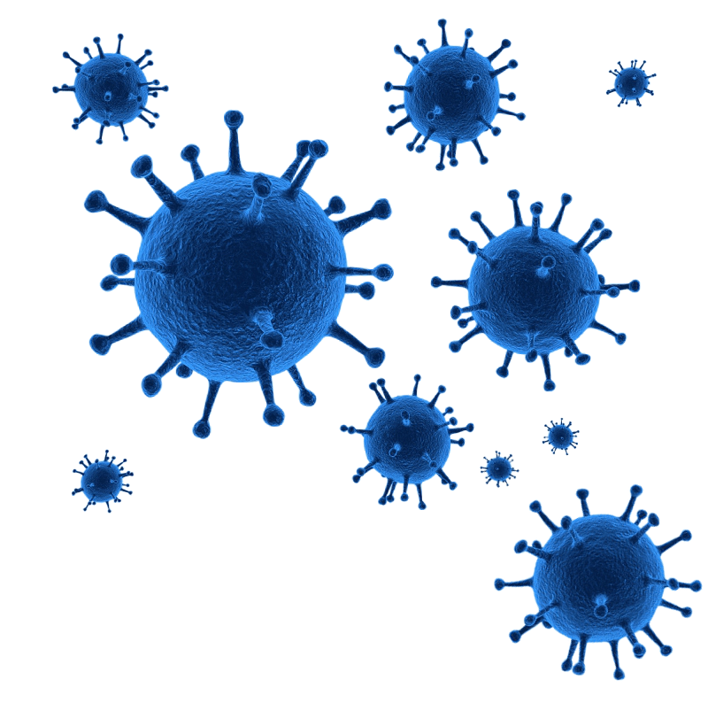

О компании

BIOCAD является одной из крупнейших биотехнологических инновационных компаний в России.
Более 20 лет компания успешно объединяет научно-исследовательские центры мирового уровня,
современное
фармацевтическое и биотехнологическое производство, а также систему
доклинических и клинических исследований, соответствующую международным стандартам.
BIOCAD ведет полный цикл создания лекарственных препаратов:
от поиска молекулы и генной инженерии до массового производства и маркетинговой поддержки. Препараты компании предназначены для терапии онкологических, аутоиммунных и других социально значимых заболеваний. Продуктовый портфель
в настоящее время состоит из 68 лекарственных препаратов, из которых 13 — оригинальные, а 23 продукта — биологические. Более 40 продуктов находятся на разных стадиях разработки.
Портфель
68 лекарственных препарата, из которых 13 — оригинальные, 23 — биологические
Площадки
более 40 лабораторий и 7 производственных комплексов
Сотрудники
более 3000 человек, из которых треть — ученые
и исследователи
Миссия
Улучшение и продление жизни людей посредством предоставления эффективных, безопасных и доступных комплексных решений в области лекарственного обеспечения.
Видение
BIOCAD – российская инновационная биотехнологическая компания полного цикла с преобладанием экспортной выручки, являющаяся лидером в странах присутствия на рынке лекарственных препаратов для лечения тяжелых хронических заболеваний.
Наши ценности
Команда
У нас принято говорить: «Мы вместе достигли результатов», признавая участие и роль каждого и силу синергии команды. Работа в команде подразумевает уважение и доверие к коллегам, умение сотрудничать, а также давать и принимать обратную связь. Работа в команде не возможна без умения понимать и принимать других людей, быть толерантным к чужим ошибкам.
Честность
Честность с самим собой и другими. Говорить правду не просто, но только открытое обсуждение и корректная обратная связь могут продвинуть нас в решении сложных задач и сделать нас лучше. Поэтому каждый сотрудник команды открыт и справедлив, готов к искреннему и честному обсуждению, объективно принимает решения в пользу компании и команды.
Осознанность
Работа в BIOCAD - это в первую очередь осознание того, для чего мы работаем – смысла проектов, задач, решений. Осознанность помогает видеть свою роль и поддерживать ясность мысли. Живой и гибкий ум позволяет постигать свою роль в достижении стратегии, быть уверенным в себе, а также аргументировать собственные действия и точку зрения. Важно, что мы ставим под сомнение устоявшиеся правила, мыслим неформально и критично.
Вовлеченность
Вовлеченность в свое дело – это то, что отличает сотрудников BIOCAD, это основа удовольствия от работы и удивительных результатов, которые достигает команда. Каждый из нас понимает общую стратегию нашей компании, и глубоко прорабатывая все вопросы, занимает проактивную позицию. У нас поощряются все инициативы. Каждый сам думает, как именно сделать свою работу лучше, и смело предлагает новые идеи.
Целеустремленность
Каждый из нас ориентируется на результат и имеет привычку считать, что все возможно. Мы умеем преодолевать возникшие преграды и никогда не опускаем руки, решая задачи и совершая открытия.
Саморазвитие
BIOCAD – компания, построенная на экспертизе. Для нас задачи каждого дня – это непрерывное повышение профессионального уровня, создание нового знания, применение новых технологий.
Ответственность
Наша ответственность – в рациональном использовании ресурсов нашей компании, готовности каждого брать ответственность на себя, принимать решения и быть внимательным к деталям.